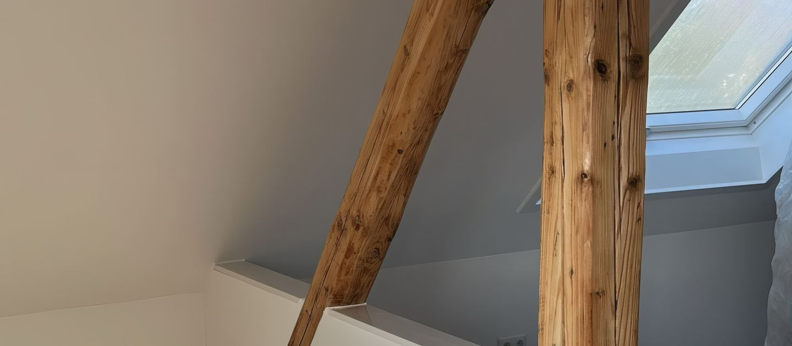
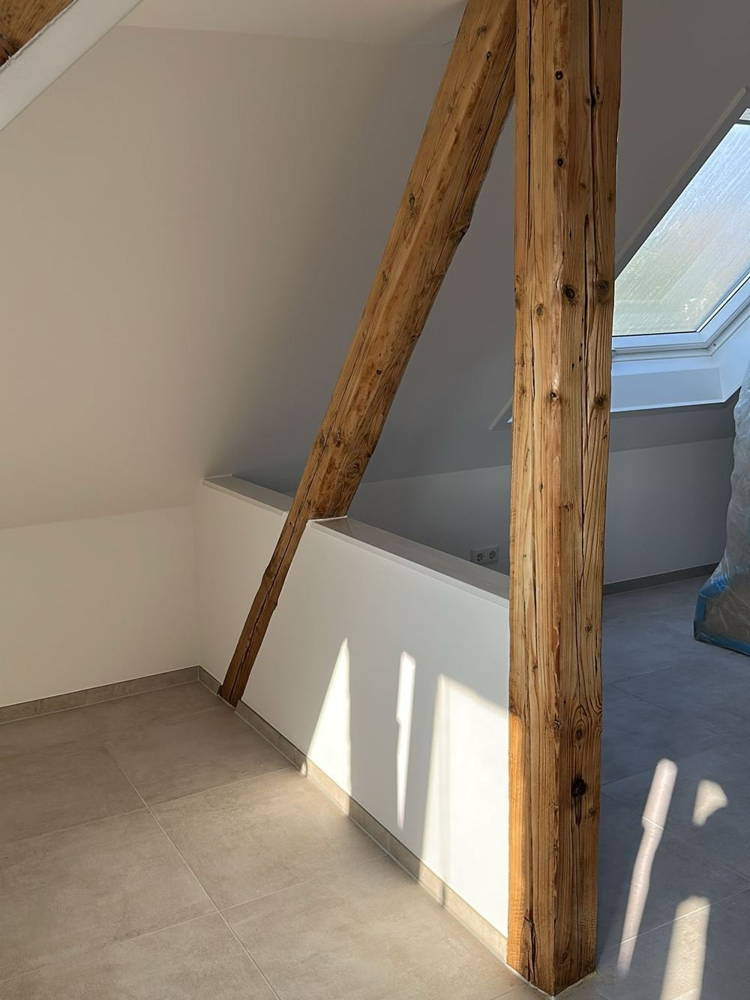
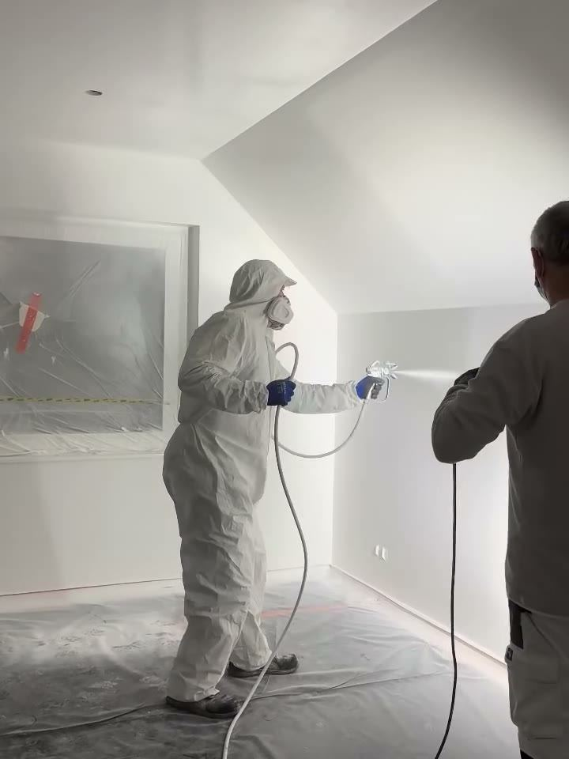
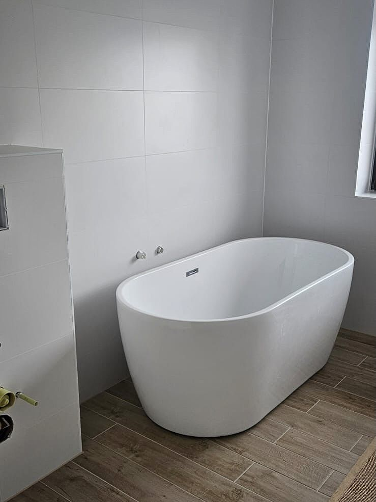
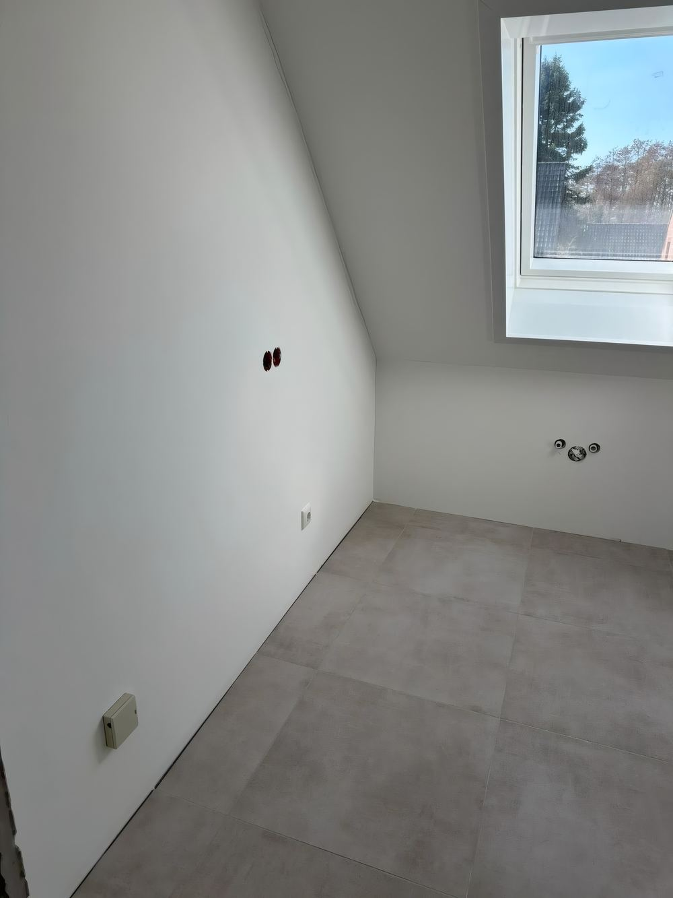
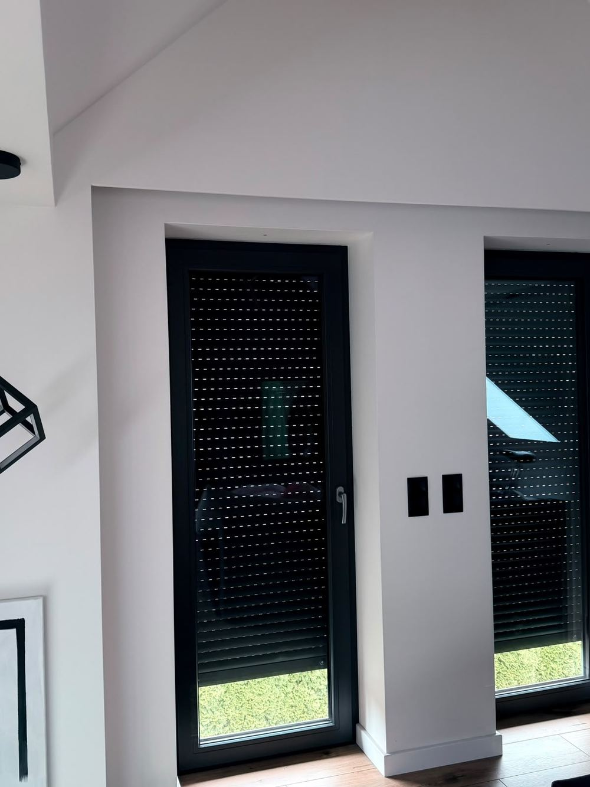

Pięć robót, które bierzemy najczęściej - i to, co przy każdej z nich decyduje o efekcie. Ceny nie podajemy z góry - zależy od zakresu i od tego, co zastaniemy na ścianie.
Gładź decyduje o tym, jak ściana wygląda po pomalowaniu. Każde zafalowanie widać dopiero wtedy, gdy padnie na nie światło z okna - dlatego to jest robota, przy której nie ma dróg na skróty.
Robimy gładzie ręcznie i maszynowo: ściany, sufity i skosy poddaszy.
gładzie ręczne i maszynowe · ściany, sufity, skosy · przygotowanie pod malowanie

Malujemy wałkiem i agregatem natryskowym. Agregat bierzemy tam, gdzie powierzchnia jest duża, a powłoka ma być równa - bez śladów po wałku i bez łączeń.
Podłogi, stolarkę i grzejniki zaklejamy przed robotą, a nie po niej.
malowanie wnętrz · agregat natryskowy · zabezpieczenie podłóg i stolarki

Łazienka to najwięcej rzemiosła na najmniejszym metrażu: podejścia wodne, płytki wielkoformatowe, zabudowa wanny albo wnęki prysznicowej, na końcu silikony.
Płytka wielkoformatowa nie wybacza krzywej ściany, więc równanie podłoża jest tu połową roboty.
płytki wielkoformatowe · wanny wolnostojące · zabudowa i wnęki · podejścia wodne

Płyta gipsowo-kartonowa zamienia poddasze w pokoje: skosy, sufity, ścianki działowe, wnęki i obudowy.
Zabudowę prowadzimy tak, żeby od razu szła pod gładź: równe płaszczyzny, wyprowadzone narożniki, taśmowanie na łączeniach.
skosy i sufity · ścianki działowe · wnęki i obudowy

Drzwi i okna montujemy zwykle na końcu wykończenia - wtedy, gdy ściany są już gotowe i wiadomo, w co się wstawia.
Po montażu sami obrabiamy ościeża i wykańczamy ścianę wokół futryny.
drzwi wewnętrzne i zewnętrzne · okna · obróbka i wykończenie po montażu

Wnętrza są naszą główną robotą, ale na koncie mamy też elewacje z podbitką, ściany w betonie architektonicznym i wykończenia schodów. Zdjęcia z tych budów stoją w realizacjach.
Umawiamy oględziny na miejscu i wracamy z wyceną do 5 dni roboczych.